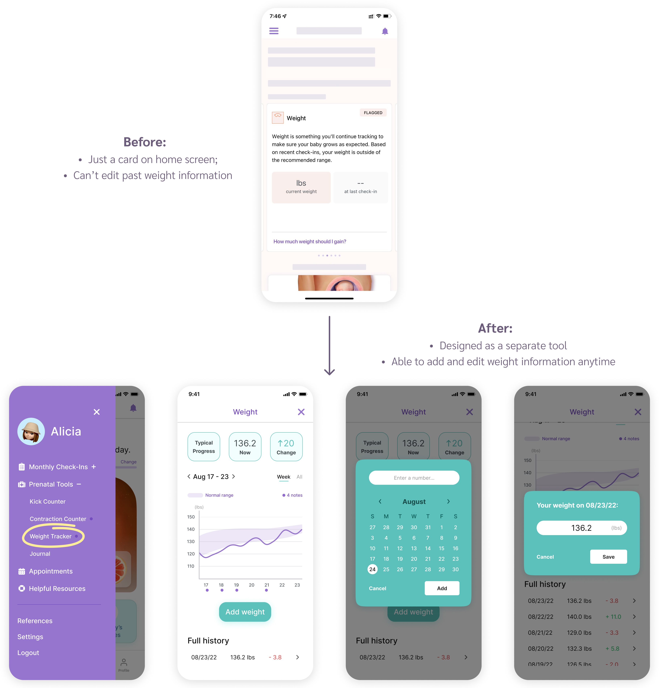

Shop Local Minority Business Initiative
Timeline
5 weeks
My role
UX researcher, UX designer, Front-end developer
Tools
Figma, Miro, HTML, CSS, Bootstrap
Background
Our client, Center for Shared Prosperity (CSP), is an organization
that aims to find solutions regarding socioeconomic inequities and
building a model of community-university collaboration at Carnegie
Mellon University.
Our task was to extend the
original CSP website
to another responsive website reiterating the goals of CSP and a
database of local minority-owned businesses in Pittsburgh. We wish
to create a platform for the CMU community to get access to a
searchable database and educate student, faculty, and staff
populations about the power of supporting local minoritized
businesses.
One challenge we face is that we are not able to do back-end
development such as actually linking the database to the website.
Therefore, our final deliverable will not be a functional website
that links to the database but a prototype that shows the overall
design of the website.
Competitive Analysis
We reviewed the websites of other committees and organizations with similar overarching goals and website implementations to our website. We then analyzed their strengths and weaknesses to help us recognize how we can improve our website.

Based on competitive analysis and discussion with our client, we decided to implement a website with a search bar at the top, filters that can turn to dropdown menus on mobile screen, a carousel for a featured list, card layout for business list, and a business info page for each business. We also included a form for users to recommend a local minoritized business.
User Research
Our target audience is CMU-related people, including students,
faculty and staff. To ensure that we are reaching the proper
audience, our website will have a section dedicated to educating the
CMU community about the power of supporting local economies with an
emphasis on the value of patronizing minority businesses.
Our website contains a directory of minority-owned businesses, but
we expect the majority of the visitors to be the potential customers
of these businesses from the CMU community, not the owners
themselves.


Lo-fi Wireframes
Desktop

Tablet

Mobile

Usability Testing
After finishing the design, I conducted unmoderated usability testing on 6 active users using Maze.
Questions:
- Find your body's changes
- Edit your past weight information on 08/23/22
- Comment on the latest discussion in the "October 2022 Birth" group in the community forum
- Do you find the tasks easy to complete?
- Any additional feedback?


According to the feedback, it seemed like users were pretty satisfied with this new design.
Wireframes

Final Design
01. Check-ins are too frequent

02. Weight Tracker is hard to use
03. Want a community forum

04. Home screen - more baby info, visuals, size guide, and daily tips

Reflection
One month before this internship started, I knew nothing about
UI/UX, not to mention how to use Figma. In four weeks, I managed to
self study UI design principles and UX design process from online
resources, and gradually became familiar with Figma.
It was a great experience to collaborate with data analyst and UX
researcher in the team. I got to know how to write interview script
so that users would be willing to provide honest feedback, and also
got the chance to analyze qualitative and quantitative data from
survey results. Being able to incorporate user feedback into design
and conduct unmoderated usability testing were brand new experiences
for me. The feeling of being connected with users through my design
was so exciting.
Since the company was very small (only 7 people), I also took on the
role of debugging the app and reviewing the logic document, which
spent a lot of time. Therefore, I wasn't able to come up with
multiple iterations for usability testing. In the future, I will try
to iterate as much as I can to create and test more design ideas.
Overall, I was very proud of my first UX design project!😊